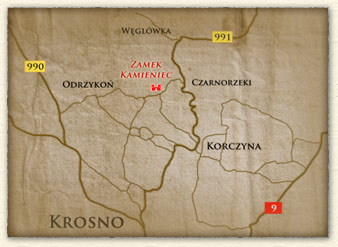

Dojazd do zamku
 Dojazd do ruin zamku jest dobrze oznakowany tablicami informacyjnymi. Można tam dotrzeć m.in.: zjeżdżając z drogi wojewódzkiej nr 991 w Korczynie lub Czarnorzekach, z Krosna kierując się na Głębokie,
lub z drogi nr 990 w kierunku na Odrzykoń.
Do zamku można dostać się autobusem – przystanek: Odrzykoń – Podzamcze. PKS zapewnia dojazd pod zamek z takich
miejscowości jak: Krosno, Korczyna, Krasna.